@CHueyBurns
📝 原文: What is it like when a King of England comes to your small town? My dispatch from Front Royal, Virginia:
🇨🇳 译文: 当英国国王来到你的小镇时，感觉如何？我从弗吉尼亚州弗兰特罗亚尔发来的消息：

🕒 2026-05-02T00:14:03+00:00
| 来源 | 旧窗口内数量 | 本次新增 | 本次淘汰 | 当前窗口内共有 |
|---|---|---|---|---|
| 推文 + Dawn 新闻 | 0 | 45 | 0 | 45 |
| ARY News | 0 | 0 | 0 | 0 |
注：淘汰数 = 旧窗口内数量 + 本次新增 - 当前窗口内共有
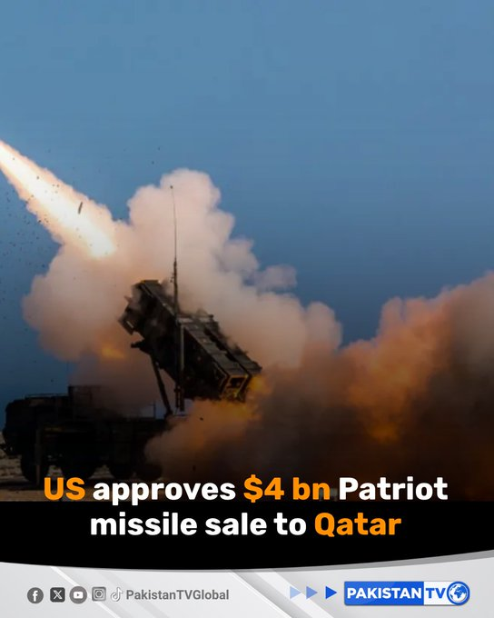
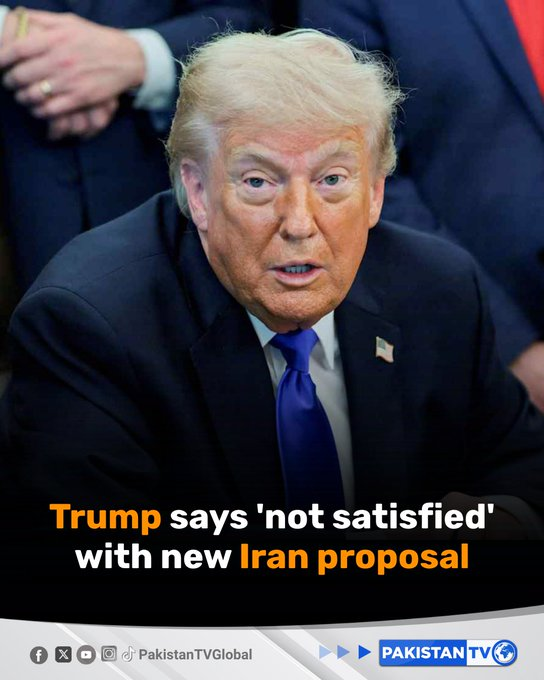
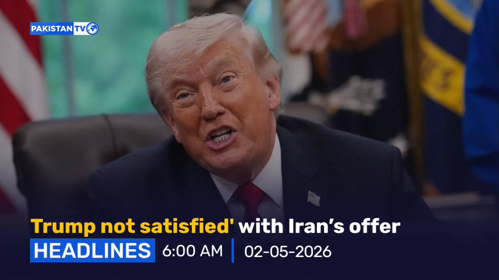
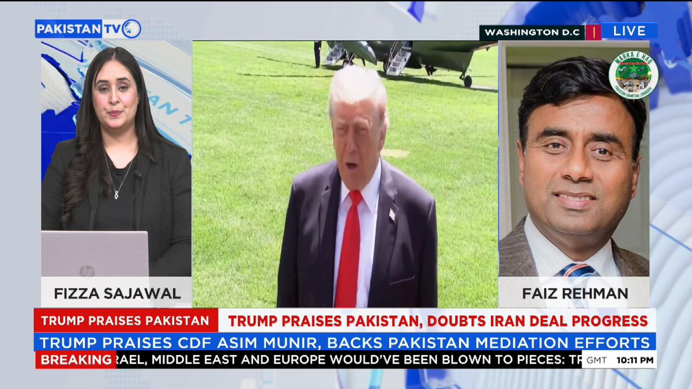
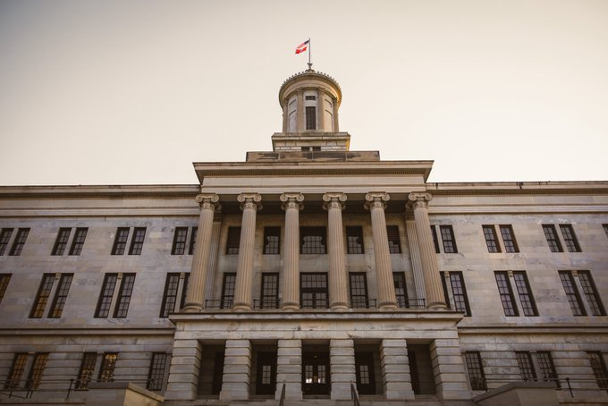
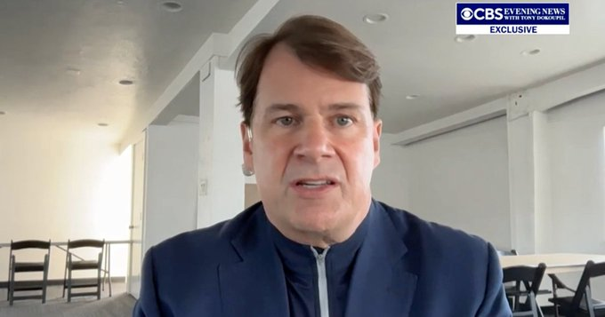
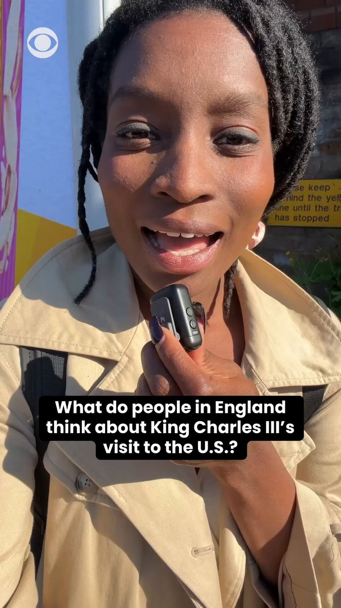


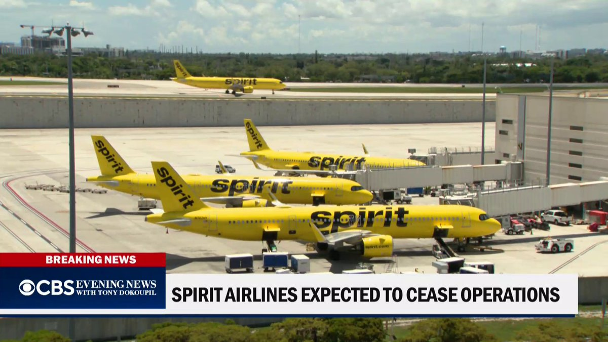
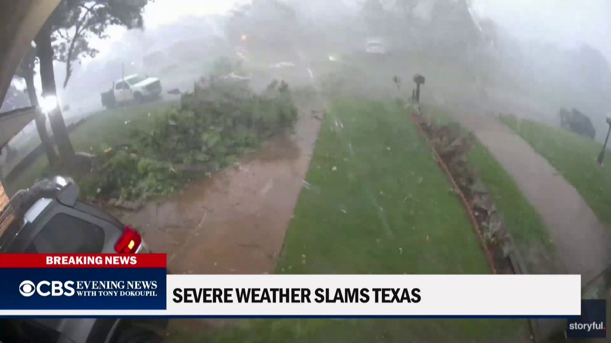


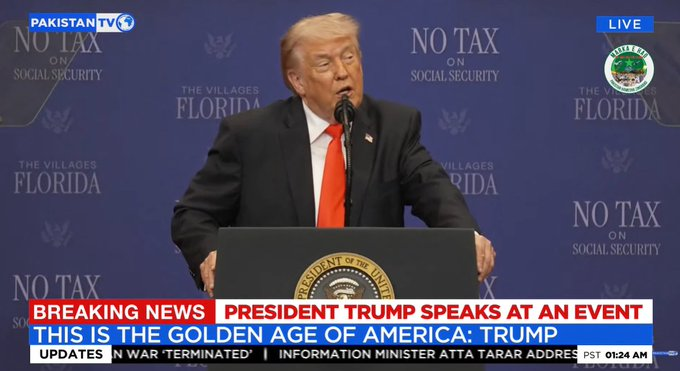
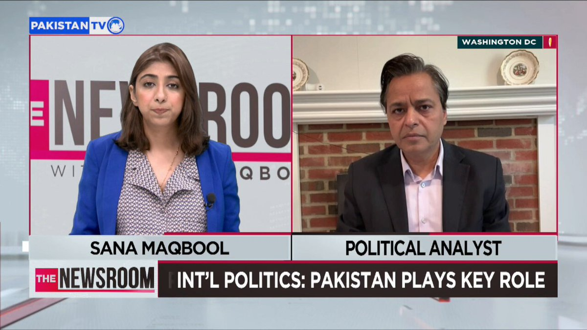

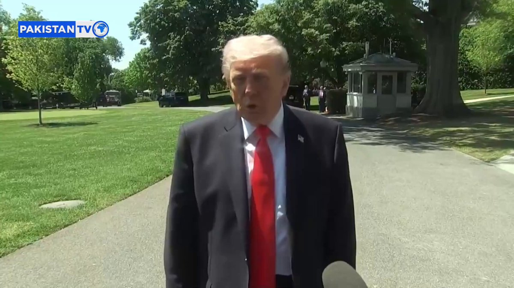
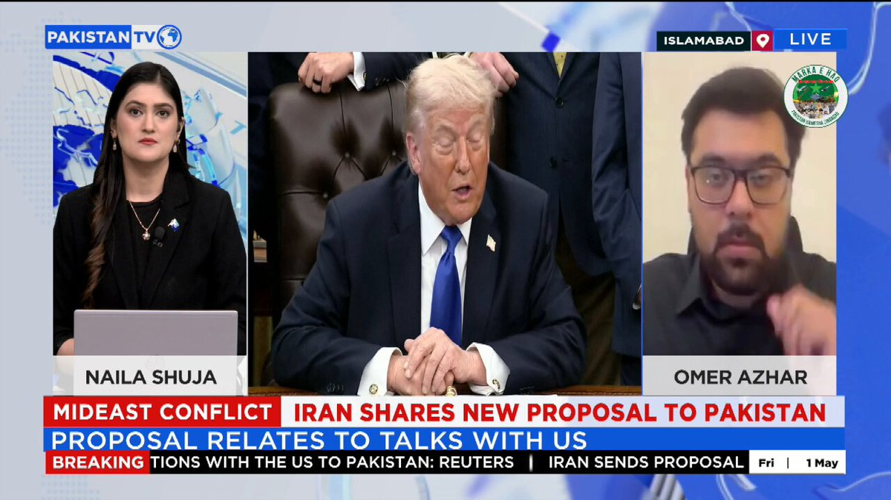
暂无文章。